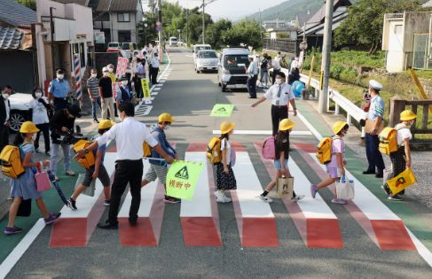

～とき (時)

NHK やさしいことばニュース · 暑い日が続く 熱中症に気をつけて
たくさん汗が出たときは、塩分をとってください。
"When you've sweated a lot, have some salt." [hot weather advice]
とき means when: it marks the moment something else happens. 汗が出たとき = when you've sweated.
Put it after a plain verb, like a noun with a description: 出た + とき. On this card, it answers "When should I have salt?": when you've sweated a lot.
With a noun, add の: 子供のとき (when I was a kid). With a な-adjective, な: 暇なとき. Politeness only shows at the end of the sentence.
Examples
Telling a friend about growing up.
子供のとき、よく川で遊んだ。
"When I was a kid, I often played in the river."
Noun + の + とき.
CasualGetting to know a coworker.
暇なときは、何をしますか。
"What do you do when you have free time?"
な-adjective + な + とき.
PoliteYour mom reminds you.
寝るとき、電気を消してね。
"Turn off the light when you go to bed."
Dictionary form: right as it happens.
CasualTalking about a trip.
日本に行ったとき、富士山を見ました。
"When I went to Japan, I saw Mt. Fuji."
Past form: it already happened.
PoliteWith and without
雨が降ります。家にいます。
"It rains. I stay home." Two separate facts.
雨が降るときは、家にいます。
"When it rains, I stay home." The first part says when.
Sentence mining

YouTube · video
だから、外に出かけるときは、いつも予備のコンタクトを持っていきます。
"That's why I always bring spare contacts when I go out."

YouTube · video
これは、熱が出た時に体温を測るための機械です。
"This is a device for taking your temperature when you have a fever."
時 is とき in kanji.

YouTube · video
１０００人を超えた時に、なんか、希望が見えました！
"When I passed 1,000, I could finally see some hope!"

YouTube · video
ね、出汁っていうのは、日本料理を作る時に必要なスープの素です。
"Dashi is the soup base you need when you cook Japanese food."

YouTube · video
そう、あの、レンタカーを借りた時にそのスタッフの人とちょっと色々話をしました。
"Yeah, when I rented a car, I chatted with the staff a bit."

Source unknown No source
晩ごはんのとき、さっそく食べてみました。
"At dinner, I tried it right away."
Noun + の + とき.

Source unknown No source
高校生の時には、ミュージシャンになると心に決めて
"When I was in high school, I made up my mind to become a musician."

Core deck Core
道路を横断するときは注意して。
"Be careful when you cross the road."